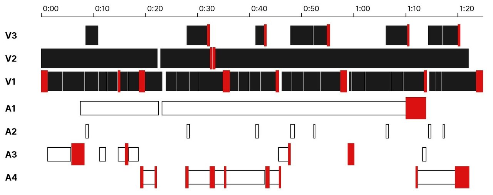
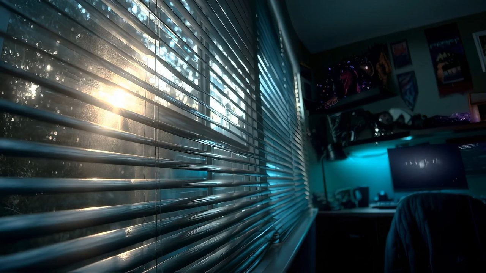
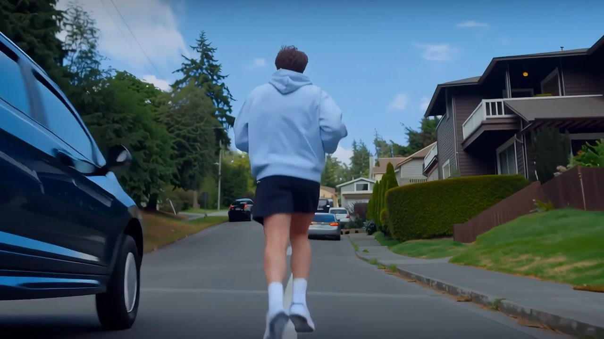
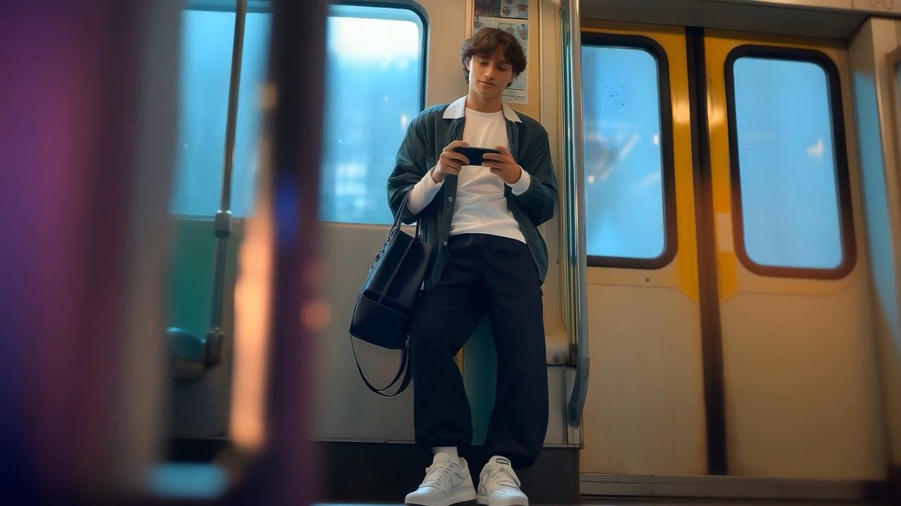

넥슨 외주 쇼케이스 영상 · 2025
메이플스토리N
메이플스토리N 쇼케이스 영상

7일 동안 다섯 번 고쳤습니다
1차 편집본을 낸 뒤 7일 동안 5차까지 고쳐 납품했습니다. 2차에서 길이를 늘려 구성을 보강했고, 3차부터 사운드를 입혔고, 마지막 두 차수에서는 컷과 화면 전환을 다듬었습니다.




넥슨 외주 쇼케이스 영상 · 2025
메이플스토리N 쇼케이스 영상
1차 편집본을 낸 뒤 7일 동안 5차까지 고쳐 납품했습니다. 2차에서 길이를 늘려 구성을 보강했고, 3차부터 사운드를 입혔고, 마지막 두 차수에서는 컷과 화면 전환을 다듬었습니다.



